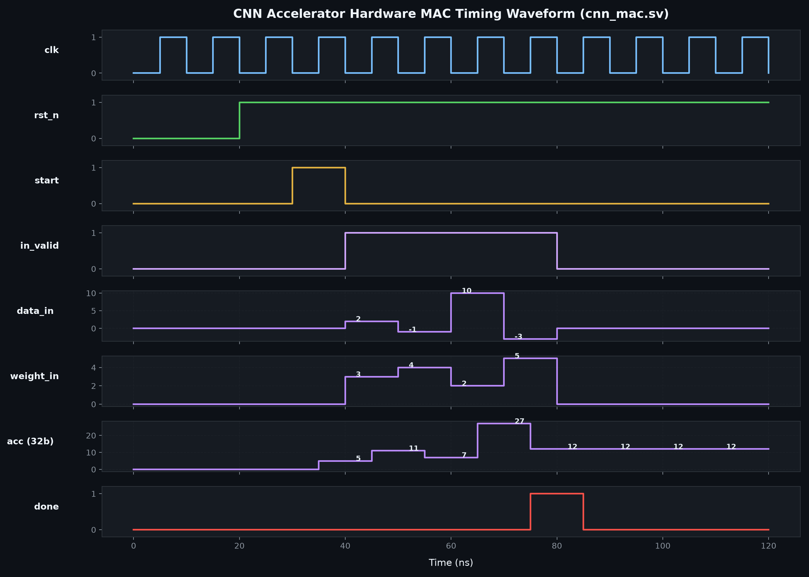

rtl/cnn_mac.sv and rtl/cnn_relu_sat_u8.sv with testbench tb/tb_cnn_mac.sv
| Time (ns) | Cycle | clk | rst_n | start | busy | in_valid | data_in | weight_in | last | Accumulator | done | Hardware Event / Operation |
|---|---|---|---|---|---|---|---|---|---|---|---|---|
| 0 - 20 | 0 - 1 | ~ | 0 | 0 | 0 | 0 | 0 | 0 | 0 | 0 | 0 | Active-low reset clearing all internal registers |
| 20 - 30 | 2 | ~ | 1 | 0 | 0 | 0 | 0 | 0 | 0 | 0 | 0 | Reset deasserted; hardware idle |
| 30 - 40 | 3 | ~ | 1 | 1 | 1 | 0 | 0 | 0 | 0 | 5 | 0 | start=1 loads bias_in=5 into accumulator; asserts busy=1 |
| 40 - 50 | 4 | ~ | 1 | 0 | 1 | 1 | 2 | 3 | 0 | 11 | 0 | MAC operation: 5 + (2 * 3) = 11 |
| 50 - 60 | 5 | ~ | 1 | 0 | 1 | 1 | -1 | 4 | 0 | 7 | 0 | MAC operation: 11 + (-1 * 4) = 7 |
| 60 - 70 | 6 | ~ | 1 | 0 | 1 | 1 | 10 | 2 | 0 | 27 | 0 | MAC operation: 7 + (10 * 2) = 27 |
| 70 - 80 | 7 | ~ | 1 | 0 | 1 | 1 | -3 | 5 | 1 | 12 | 0 | last=1 asserted: 27 + (-3 * 5) = 12 |
| 80 - 90 | 8 | ~ | 1 | 0 | 0 | 0 | 0 | 0 | 0 | 12 | 1 | DONE: Asserts done=1, clears busy=0, ReLU output = 12 |
Run the following command in your terminal to install and open GTKWave:
sudo apt-get install -y gtkwave
gtkwave outputs/waveforms/cnn_mac_simulation.vcd &